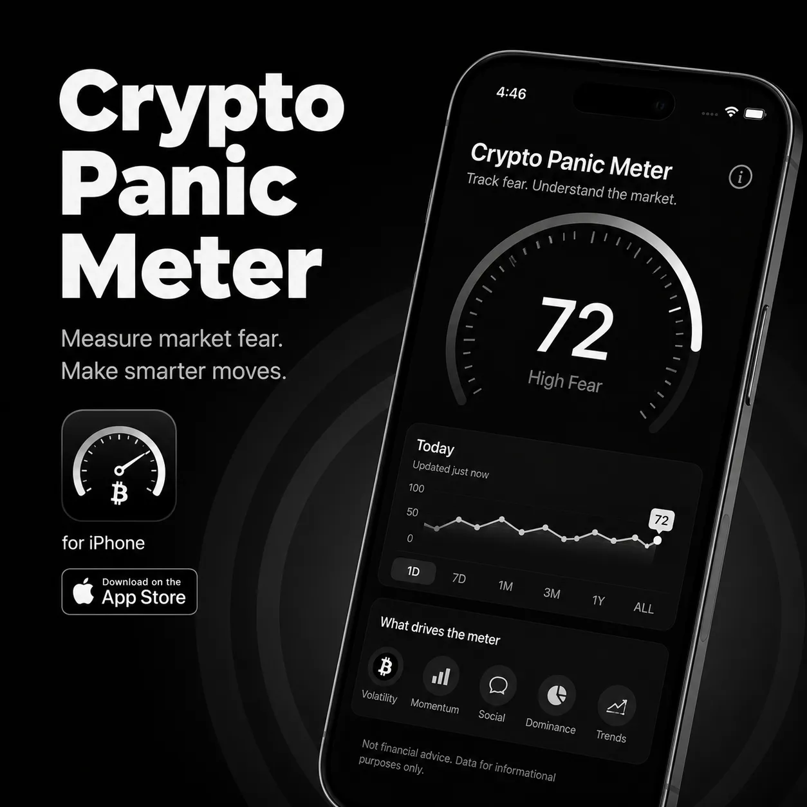
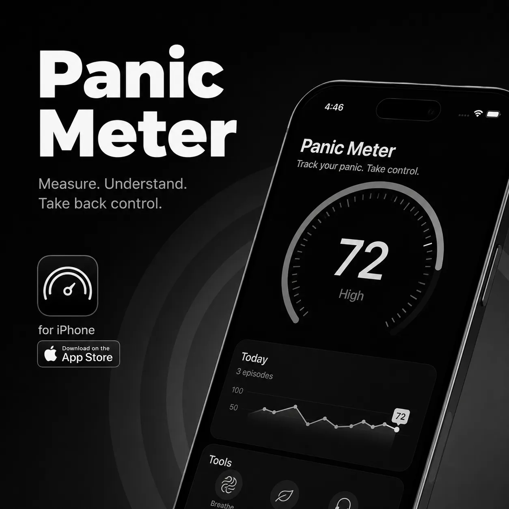
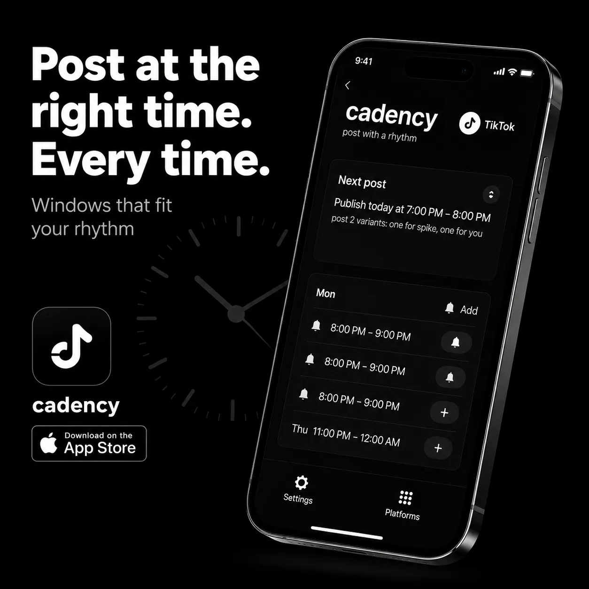

File 01
The first signal
The signal returned after midnight.
Panel A
Recovered from a quiet hallway feed.
Panic Operator preserves fragments that refuse to settle into ordinary explanations: misplaced figures, repeating timestamps, empty rooms that appear to respond, and signals that return after the source is gone.
Every file begins with something small - a frame, a sound, a detail noticed too late. The archive keeps the record without forcing a conclusion.
Review the footage. Follow the signal. Keep your own conclusion.
The signal returned after midnight.

Something stayed in frame too long.
The Operator Manual is the full release: all 15 rules collected in one place for moments when the room, recording, or signal no longer behaves as expected. It does not explain the event. It helps you observe it clearly.
This is the complete field reference, not a sample or excerpt. Keep it close when the pattern shifts, the timestamp feels wrong, or the room stops behaving the way it should.
Each case begins with a frame, a time, and a detail that should not be there. The original record is kept intact. Interpretation remains open.


A small collection of independent iOS instruments for tracking pressure, timing, repetition, and the things that are easy to miss.

A focused reading of market pressure, momentum, and fear.
View on the App Store
A private tool for noticing patterns in stress before they take control.
View on the App Store
A timing companion for posting with more consistency and less guesswork.
View on the App StoreA quiet record of subscriptions and charges that return every month.
View on the App StoreLong-form ambient files from the Panic Operator archive. Built for late-night review, empty rooms, and the moments between recorded events.
A low mechanical presence recorded below an empty structure.
A narrow signal that appears to move from room to room.
The transmission continues after the source is disconnected.
A distant return from a channel marked inactive.
A sealed collection of background files kept like recovered evidence. The first bundle lives in archive001, filed as a quiet drop from the larger record.
These wallpapers are presented like secret files: muted light, soft static, and a trace that suggests someone kept cataloging the room after the lights went out.
Have a strange frame, an unexplained sighting, or a case that needs another look? Send it through the open channel. Useful details include the time, place, source, and what first felt wrong.
Send evidence, notes, links, or a short account of what happened. We cannot promise an explanation, but we will read what you found.
Transmission Log
The main archive lives on Facebook. TikTok is the backup archive. Telegram is the quiet channel. Patreon helps keep the investigation active when the trail goes quiet.
Start with the main archive for the current case record. Use the backup archive for fragments, updates, and signals that have not yet found their place. The quiet channel keeps the smaller drops moving.